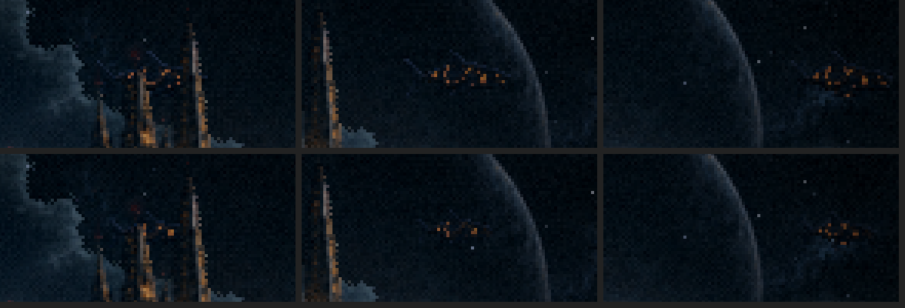
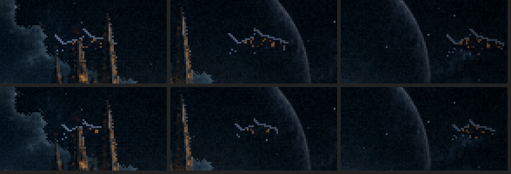
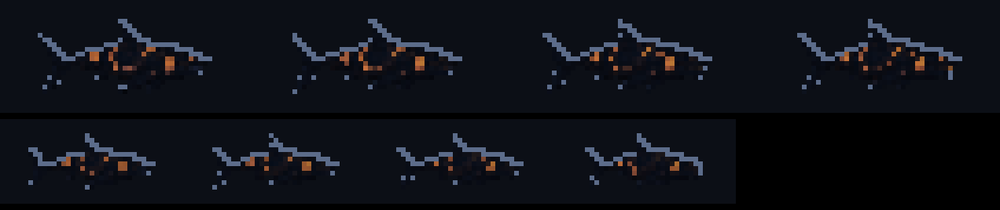
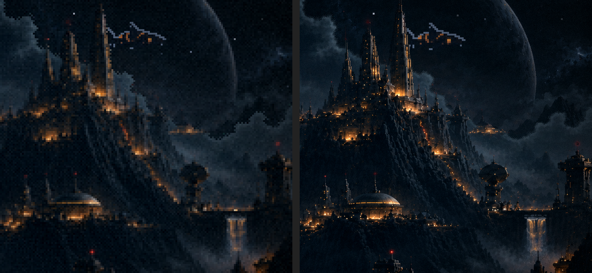

Menu refeito · rodada 2 · o menu vivo
19/10/2026. ← rodada 1 (a pintura) · As suas escolhas: o Leviatã B ainda menor, o tratamento das fases, vida nas luzes, na cachoeira e na nave. Tudo rodando dentro do jogo, em velocidade real. Os vídeos repetem sozinhos.
O menu, na resolução do jogo o tamanho
A sua pintura reduzida uma vez para 384×216, com um perfil da Atmosfera feito para ela (névoa no vale, halo nas luzes âmbar, cor, vinheta e grão). O Leviatã sai de trás das nuvens, passa atrás das agulhas e cruza na frente do planeta, em 26 s.
Por que o Leviatã ganhou o aro
O B da rodada 1, só reduzido, sumiu no jogo: o corpo escuro tem o tom do céu, e sobraram só as brasas da lava, um enxame de luzes que lê como nave, não como bicho. É a mesma lição da silhueta do bloco D: a sombra só lê se for mais escura que o fundo e tiver um contorno.
Então ele ganhou o acabamento "arolava" do bloco D: o corpo afundado na noite, a lava acesa e o aro frio de 1 px nas costas, o mesmo da silhueta da F1 e da F2. Cada tamanho é assado no arquivo, quadro a quadro (o jogo encolhendo o nado faz ele "ferver").



A vida no cenário, de perto corte o que não gostar
- As janelas: 24 janelas pequenas apagam de vez em quando, algumas com uma piscada falhando antes, e voltam. O halo da Atmosfera faz todas as luzes quentes brilharem e respirarem.
- Os faróis vermelhos: os 15 das pontas das torres piscam, cada um no seu tempo.
- A cachoeira: a água desce em loop, desenhada nos pixels dela mesma.
- O tráfego: pontinhos de luz andando nas cinco pontes acesas, nos dois sentidos.
- A nave: recortada da pintura (o céu atrás dela foi refeito), sobe e desce 1 pixel devagar, com as luzes da barriga correndo em sequência e um farol vermelho no topo. Na resolução do jogo as janelas dela sumiam e ela virava uma mancha, então ganhou o mesmo aro frio do Leviatã.
- As estrelas: nove, piscando na janela do céu.
Resolução do jogo × resolução original confirme
Você pediu para ver também na resolução original. As duas abaixo rodam no mesmo relógio, com a mesma Atmosfera e os mesmos efeitos, ambas em 1536×864: a do jogo ampliada ×4, a original quase no tamanho do arquivo (97%).

O que eu vejo:
- Na original, a pintura fica bem mais nítida: as janelas, as agulhas e a cachoeira aparecem.
- Mas o Leviatã, as luzes que piscam e o tráfego continuam com o pixel do jogo, 4× mais grosso que o da pintura. Na mesma tela convivem duas resoluções, e o bicho parece colado por cima (veja o pedaço 1:1).
- A névoa e o grão da Atmosfera também ficam 4× mais finos que nas fases, e o menu passa a ter outra textura que o jogo. Ao apertar COMEÇAR, a F1 entra com o pixel grosso de novo.
recomendo Continuo com a resolução do jogo. A original só fecharia se todas as peças por cima também fossem refeitas em alta resolução, e aí o menu viraria uma ilustração, diferente do resto do jogo.
para decidir
- O tamanho do Leviatã: 39 px (minha aposta) ou 53 px.
- A resolução: a do jogo (recomendo) ou a original.
- Os efeitos: algum para cortar, mais forte ou mais fraco?